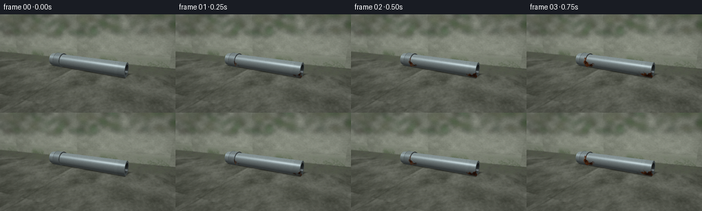
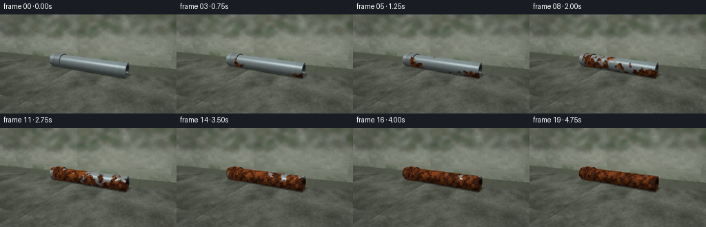
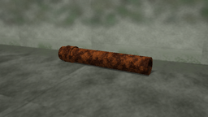
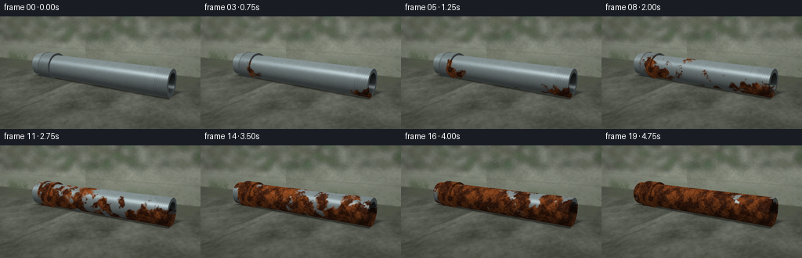

CODING AGENTS AS PIXEL WORLD MODELS
traex/GPT-6.1-Sol · material_0048
点击播放 · 原生 RGB 像素
逐轮保存的候选
回放视频、检查图与代码变化。
每份候选均可单独播放。实际图片检查记录在下方工具轨迹中。
候选 01播放与检查图
点击播放 · 原生 RGB 像素

展开代码变化
--- 上一保存版本
+++ 本次保存版本
@@ -0,0 +1,240 @@
+from pathlib import Path
+import math
+import numpy as np
+from PIL import Image, ImageFilter, ImageDraw
+import artifact_io
+
+ROOT = Path(__file__).resolve().parent
+W,H,SS = 256,144,3
+SW,SH = W*SS,H*SS
+rng=np.random.default_rng(8123)
+
+def norm(v):
+ return v/(np.linalg.norm(v,axis=-1,keepdims=True)+1e-10)
+def smooth(a,b,x):
+ t=np.clip((x-a)/(b-a),0,1);return t*t*(3-2*t)
+def noise2(w,h,scales,seed):
+ rr=np.random.default_rng(seed); out=np.zeros((h,w),np.float32); wt=0
+ for size,weight in scales:
+ ww=max(2,int(w/size));hh=max(2,int(h/size))
+ ar=rr.random((hh,ww)).astype(np.float32)
+ im=Image.fromarray(ar,mode='F').resize((w,h),Image.Resampling.BICUBIC)
+ out+=np.array(im)*weight;wt+=weight
+ return out/wt
+
+def texsample(tex,u,v):
+ th,tw=tex.shape
+ xx=np.mod(u,1)*(tw-1); yy=np.mod(v,1)*(th-1)
+ x0=xx.astype(int);y0=yy.astype(int);x1=(x0+1)%tw;y1=(y0+1)%th
+ ax=xx-x0;ay=yy-y0
+ return tex[y0,x0]*(1-ax)*(1-ay)+tex[y0,x1]*ax*(1-ay)+tex[y1,x0]*(1-ax)*ay+tex[y1,x1]*ax*ay
+
+# A fixed, intimate outdoor shot, with physical perspective and hollow pipe ends.
+cam=np.array([4.1,3.3,9.6]);look=np.array([0,.53,0])
+forward=norm(look-cam);right=norm(np.cross(forward,[0,1,0]));up=norm(np.cross(right,forward))
+yy,xx=np.mgrid[0:SH,0:SW]
+aspect=SW/SH; scale=math.tan(math.radians(37)/2)
+D=norm(forward[None,None,:]+right[None,None,:]*((xx+.5)/SW*2-1)[...,None]*scale*aspect+up[None,None,:]*(1-(yy+.5)/SH*2)[...,None]*scale)
+O=np.broadcast_to(cam,D.shape)
+light=norm(np.array([-3.,7.,4.]))
+
+# World-aligned natural surface textures.
+soiltex=noise2(1536,1024,[(160,.30),(60,.24),(16,.17),(4,.15),(1,.14)],14)
+walltex=noise2(1024,1024,[(220,.30),(50,.24),(10,.2),(2,.16),(1,.1)],34)
+tfloor=(0-cam[1])/D[...,1]
+pfloor=O+D*tfloor[...,None]
+valid_floor=(tfloor>0)&(D[...,1]<-.001)
+twall=(-3.0-cam[2])/D[...,2]
+pwall=O+D*twall[...,None]
+valid_wall=(twall>0)&(pwall[...,1]>0)
+floor_front=valid_floor&((tfloor<twall)|~valid_wall)
+ng=texsample(soiltex,pfloor[...,0]/8+.15,pfloor[...,2]/8+.35)
+ng2=texsample(soiltex,pfloor[...,0]/1.7+.52,pfloor[...,2]/1.7+.35)
+base=np.zeros((SH,SW,3),np.float64)
+ground=np.array([91.,94.,84.])[None,None,:]+(ng[...,None]-.5)*80+(ng2[...,None]-.5)*16
+# Small pits, wet mineral flecks and moss in the weathered concrete.
+pits=smooth(.69,.83,ng2); ground-=pits[...,None]*25
+moss=smooth(.43,.67,ng)*smooth(.2,1.2,-pfloor[...,2])
+ground=ground*(1-.29*moss[...,None])+np.array([42,59,26])*moss[...,None]*.29
+# Subtle old slab joints.
+seam=np.exp(-((pfloor[...,0]+.9+.035*np.sin(pfloor[...,2]*2))/.025)**2)
+ground-=seam[...,None]*17
+nw=texsample(walltex,pwall[...,0]/8+.3,pwall[...,1]/5)
+wall=np.array([132,137,124])[None,None,:]+(nw[...,None]-.5)*63
+wm=smooth(.43,.64,nw)*(1-smooth(.0,1.0,pwall[...,1]))
+wall=wall*(1-.5*wm[...,None])+np.array([39,59,26])*wm[...,None]*.5
+# A restrained weathered mortar line, to anchor the setting.
+line=np.exp(-((pwall[...,1]-.9-.008*np.sin(pwall[...,0]*4))/.014)**2)
+wall-=line[...,None]*16
+base[:]=wall
+base[floor_front]=ground[floor_front]
+# Out of focus natural background: understated green ivy, all hand-generated.
+bg=Image.fromarray(np.uint8(np.clip(base,0,255)))
+plant=Image.new('RGBA',(SW,SH),(0,0,0,0));dr=ImageDraw.Draw(plant)
+rr=np.random.default_rng(654)
+for j in range(200):
+ x=rr.uniform(-60,SW+30);y=rr.uniform(-40,90)
+ r=rr.uniform(7,25); col=(int(rr.uniform(32,75)),int(rr.uniform(53,90)),int(rr.uniform(26,51)),int(rr.uniform(95,180)))
+ dr.ellipse((x-r,y-r*.4,x+r,y+r*.4),fill=col)
+plant=plant.filter(ImageFilter.GaussianBlur(10))
+bg=Image.alpha_composite(bg.convert('RGBA'),plant).convert('RGB').filter(ImageFilter.GaussianBlur(1.4))
+base=np.asarray(bg,dtype=np.float64).copy()
+
+A=np.array([-3.3,.49,-.37]);B=np.array([2.85,.49,.38]);axis=norm(B-A);length=float(np.linalg.norm(B-A))
+e1=np.array([0,1.,0]);e2=norm(np.cross(axis,e1))
+
+# Analytical intersections of finite cylinders, including the annular end faces.
+def cylinder(a,b,r,inner=0.,material=1):
+ ax=norm(b-a);L=np.linalg.norm(b-a);co=O-a
+ dv=np.sum(D*ax,axis=-1); ov=np.sum(co*ax,axis=-1)
+ dp=D-dv[...,None]*ax;op=co-ov[...,None]*ax
+ aa=np.sum(dp*dp,axis=-1);bb=2*np.sum(dp*op,axis=-1)
+ best=np.full((SH,SW),np.inf);bn=np.zeros(D.shape);bpart=np.zeros((SH,SW),int)
+ for rad,part in [(r,0)]+([(inner,1)] if inner>0 else []):
+ cc=np.sum(op*op,axis=-1)-rad*rad;disc=bb*bb-4*aa*cc
+ rt=np.sqrt(np.maximum(0,disc))
+ for sign in [-1,1]:
+ t=(-bb+sign*rt)/(2*aa+1e-12);z=ov+t*dv
+ use=(disc>=0)&(t>0)&(z>=0)&(z<=L)&(t<best)
+ pp=co+D*t[...,None]-z[...,None]*ax
+ nn=norm(pp)*(1 if part==0 else -1)
+ best[use]=t[use];bn[use]=nn[use];bpart[use]=part
+ for z,sgn in [(0,-1),(L,1)]:
+ t=(z-ov)/(dv+1e-12);pp=co+D*t[...,None]-z*ax
+ r2=np.sum(pp*pp,axis=-1)
+ use=(t>0)&(t<best)&(r2<=r*r)&(r2>=inner*inner)
+ best[use]=t[use];bn[use]=ax*sgn;bpart[use]=2
+ return best,bn,bpart
+
+T=np.full((SH,SW),np.inf);N=np.zeros(D.shape);part=np.zeros((SH,SW),int);mat=np.zeros((SH,SW),int)
+# Main hollow water pipe; compact coupling sleeve at the far end.
+objects=[(A,B,.49,.355,1),(A+axis*.42,A+axis*1.08,.565,.49,2), (A+axis*.44,A+axis*.50,.579,.49,3),(A+axis*1.01,A+axis*1.07,.579,.49,3)]
+for a,b,r,inner,m in objects:
+ t,n,pa=cylinder(a,b,r,inner,m)
+ use=(t<T)&((t<tfloor)|~valid_floor)&((t<twall)|~valid_wall)
+ T[use]=t[use];N[use]=n[use];part[use]=pa[use];mat[use]=m
+mask=np.isfinite(T)
+P=O+D*np.where(mask,T,0)[...,None]
+s=np.sum((P-A)*axis,axis=-1)
+radial=P-A-s[...,None]*axis
+phi=np.arctan2(np.sum(radial*e2,axis=-1),np.sum(radial*e1,axis=-1))
+u=s/length;v=phi/(2*np.pi)+.5
+
+# Cast soft directional shadows onto the floor, plus a dark contact line.
+# Sample the extended light source for soft, non-studio outdoor shade.
+shadow=np.zeros((SH,SW))
+for k in range(14):
+ lr=norm(light+rr.normal(0,.08,3))
+ rel=pfloor-A;rd=lr-np.dot(lr,axis)*axis
+ ro=rel-np.sum(rel*axis,axis=-1)[...,None]*axis
+ qa=np.dot(rd,rd);qb=2*np.sum(ro*rd,axis=-1);qc=np.sum(ro*ro,axis=-1)-.50**2
+ disc=qb*qb-4*qa*qc;dist=(-qb-np.sqrt(np.maximum(0,disc)))/(2*qa)
+ along=np.sum(rel*axis,axis=-1)+dist*np.dot(lr,axis)
+ hit=(disc>0)&(dist>0)&(along>0)&(along<length)
+ shadow+=hit/14
+floor_s=np.sum((pfloor-A)*axis,axis=-1)
+perp=pfloor-A-floor_s[...,None]*axis
+contact=np.exp(-(np.sum(perp*e2,axis=-1)/.37)**2)*smooth(-.3,.3,floor_s)*(1-smooth(length-.15,length+.3,floor_s))
+base*=1-(shadow*floor_front*.36+contact*floor_front*.18)[...,None]
+
+# The corrosion is material-space stationary, growing from many moisture sites.
+coarse=noise2(2048,1024,[(270,.45),(120,.3),(46,.18),(15,.07)],18)
+fine=noise2(2048,1024,[(30,.27),(9,.25),(3,.24),(1,.24)],47)
+mid=noise2(2048,1024,[(65,.5),(19,.3),(4,.2)],87)
+c=texsample(coarse,u,v);f=texsample(fine,u,v);m=texsample(mid,u,v)
+# Independent coherent pockmarks, a lightly scratched original steel surface.
+rubble=texsample(fine,u*2.8+.25,v*1.8)
+scratches=texsample(fine,u*.48,v*14.0)
+threshold=.20+.84*c+.20*(m-.5)
+# Threads and crevices corrode first; the bottom remains persistently damp.
+threshold-=.13*np.exp(-((s-1.08)/.15)**2)
+threshold-=.16*np.exp(-((s-.42)/.10)**2)
+threshold-=.14*(.5-.5*np.cos(phi))
+threshold-=.07*(mat==2)
+threshold=np.clip(threshold,.16,.9)
+# Surface bump is generated from material-space relief, not framewise noise.
+delta=.0014
+fu=texsample(fine,u+delta,v)-texsample(fine,u-delta,v)
+fv=texsample(fine,u,v+delta)-texsample(fine,u,v-delta)
+cu=texsample(mid,u+delta,v)-texsample(mid,u-delta,v)
+cv=texsample(mid,u,v+delta)-texsample(mid,u,v-delta)
+tangent=norm(-np.sin(phi)[...,None]*e1+np.cos(phi)[...,None]*e2)
+view=-D
+halfway=norm(view+light)
+# Beaded water on the top of the pipe. Their fixed positions and drying cycles
+# make the exposure to moisture legible without any labels or scene cuts.
+droplets=[]
+for k in range(54):
+ ss=rr.uniform(1.1,length-.1);ph=rr.uniform(-1.15,.85);rad=rr.uniform(.012,.040)
+ nv=e1*np.cos(ph)+e2*np.sin(ph)
+ center=A+axis*ss+nv*(.49+rad*.22)
+ oc=O-center; bb=np.sum(oc*D,axis=-1);cc=np.sum(oc*oc,axis=-1)-rad**2
+ disc=bb*bb-cc;t=-bb-np.sqrt(np.maximum(0,disc))
+ hit=(disc>0)&(t>0)&(t<T)&mask&(part==0)&(mat==1)
+ if np.any(hit):
+ nn=norm(O+D*t[...,None]-center)
+ droplets.append((hit,nn,rr.uniform(0,6.28)))
+
+frames=[]
+for frame in range(20):
+ t=frame/19
+ # Broad stains first, then coarse, irregular oxidized crust covers the steel.
+ growth=.12+.82*(t**.78)
+ rust=smooth(threshold-.045,threshold+.045,growth)
+ # Threads cut into the cylindrical wall close to the mouth and sleeve.
+ threads=(np.cos(s*112+phi*1.05)*.5+.5)**10
+ thread_zone=smooth(length-.50,length-.43,s)*(1-smooth(length-.04,length,s))
+ threads*=thread_zone
+ seam_zone=(mat==2)|(mat==3)
+ metal=np.zeros_like(base)+np.array([151.,165.,166.])
+ metal+=(f[...,None]-.5)*17+(scratches[...,None]-.5)*20
+ metal-=threads[...,None]*34*(1-rust[...,None]*.55)
+ metal[seam_zone]*=.90
+ # Layered ochre, burnt orange and deep brown iron oxide with tiny pits.
+ tone=np.clip((m-.32)*2.7,0,1)
+ oxide=np.array([79.,37.,19.])*(1-tone[...,None])+np.array([181.,91.,37.])*tone[...,None]
+ oxide+=(f[...,None]-.5)*48
+ pock=smooth(.57,.72,rubble)
+ oxide-=pock[...,None]*np.array([41,26,16])
+ oxide+=smooth(.65,.76,f)[...,None]*np.array([27,15,6])
+ old=smooth(.66,1.0,t)*rust
+ oxide=oxide*(1-old[...,None]*.13)
+ albedo=metal*(1-rust[...,None])+oxide*rust[...,None]
+ perturb=(fu*1.9+cu*.65)[...,None]*axis+(fv*2.8+cv*.7)[...,None]*tangent
+ n=norm(N-perturb*rust[...,None])
+ n=np.where((part==2)[...,None],N,n)
+ diffuse=np.clip(np.sum(n*light,axis=-1),0,1)
+ hemi=np.clip(n[...,1]*.5+.5,0,1)
+ shade=.28+.39*diffuse+.23*hemi
+ # The bore is a true dark interior, recessed behind the bright cut rim.
+ inside=part==1
+ mouthdistance=np.minimum(s,length-s)
+ shade[inside]*=.20+.24*np.exp(-mouthdistance[inside]*5)
+ nh=np.clip(np.sum(n*halfway,axis=-1),0,1)
+ spec=nh**(85*(1-rust)+13*rust)
+ fres=(1-np.clip(np.sum(n*view,axis=-1),0,1))**3
+ roughshine=spec*(47*(1-rust)+8*rust)
+ pipe=albedo*shade[...,None]+roughshine[...,None]*np.array([1.0,1.01,1.01])
+ # Wide sky reflection on the clean, rounded metal.
+ reflection=np.exp(-((n[...,1]-.58)/.19)**2)*(.35+.65*np.clip(n[...,2],0,1))
+ pipe+=reflection[...,None]*np.array([35,40,43])*(1-rust[...,None])
+ pipe+=fres[...,None]*np.array([10,13,14])*(1-rust[...,None]*.7)
+ # Rain/dry cycles advance more quickly than the oxidation change.
+ wet=.5+.5*np.sin(frame*1.15+.7)
+ pipe*=1-rust[...,None]*wet*.045
+ col=base.copy()
+ col[mask]=pipe[mask]
+ for hit,nn,phase in droplets:
+ strength=.28+.65*(.5+.5*np.sin(frame*1.15+phase))
+ vv=np.clip(np.sum(nn*view,axis=-1),0,1)
+ sp=np.clip(np.sum(nn*halfway,axis=-1),0,1)**75
+ bead=col*.77+np.array([104.,133.,142.])*(.16+.21*(1-vv)**3)[...,None]+sp[...,None]*157
+ col[hit]=col[hit]*(1-strength)+bead[hit]*strength
+ # Minimal natural illumination variation keeps the camera and material stable.
+ col*=.987+.019*np.sin(frame*.71)
+ vignette=1-.09*(((xx-SW/2)/(SW/2))**2+((yy-SH/2)/(SH/2))**2)
+ col*=vignette[...,None]
+ out=Image.fromarray(np.uint8(np.clip(col,0,255))).resize((W,H),Image.Resampling.LANCZOS)
+ frames.append(np.asarray(out))
+artifact_io.save(np.asarray(frames,dtype=np.uint8),ROOT)
+print('Saved 20 RGB frames at 256x144.')
候选 02播放与检查图
点击播放 · 原生 RGB 像素


展开代码变化
--- 上一保存版本
+++ 本次保存版本
@@ -18,7 +18,7 @@
for size,weight in scales:
ww=max(2,int(w/size));hh=max(2,int(h/size))
ar=rr.random((hh,ww)).astype(np.float32)
- im=Image.fromarray(ar,mode='F').resize((w,h),Image.Resampling.BICUBIC)
+ im=Image.fromarray(ar).resize((w,h),Image.Resampling.BICUBIC)
out+=np.array(im)*weight;wt+=weight
return out/wt
@@ -30,10 +30,10 @@
return tex[y0,x0]*(1-ax)*(1-ay)+tex[y0,x1]*ax*(1-ay)+tex[y1,x0]*(1-ax)*ay+tex[y1,x1]*ax*ay
# A fixed, intimate outdoor shot, with physical perspective and hollow pipe ends.
-cam=np.array([4.1,3.3,9.6]);look=np.array([0,.53,0])
+cam=np.array([4.4,2.7,8.7]);look=np.array([0,.48,0])
forward=norm(look-cam);right=norm(np.cross(forward,[0,1,0]));up=norm(np.cross(right,forward))
yy,xx=np.mgrid[0:SH,0:SW]
-aspect=SW/SH; scale=math.tan(math.radians(37)/2)
+aspect=SW/SH; scale=math.tan(math.radians(25)/2)
D=norm(forward[None,None,:]+right[None,None,:]*((xx+.5)/SW*2-1)[...,None]*scale*aspect+up[None,None,:]*(1-(yy+.5)/SH*2)[...,None]*scale)
O=np.broadcast_to(cam,D.shape)
light=norm(np.array([-3.,7.,4.]))
@@ -179,7 +179,7 @@
for frame in range(20):
t=frame/19
# Broad stains first, then coarse, irregular oxidized crust covers the steel.
- growth=.12+.82*(t**.78)
+ growth=.12+.73*(t**.86)
rust=smooth(threshold-.045,threshold+.045,growth)
# Threads cut into the cylindrical wall close to the mouth and sleeve.
threads=(np.cos(s*112+phi*1.05)*.5+.5)**10
候选 03播放与检查图

可观测工具轨迹
实际执行的命令与返回图片。
命令 1exit 0
/bin/bash -lc 'ls -la && cat prompt.txt && cat GENERATION_RULES.md && cat task_spec.json'
命令 2exit 0
/bin/bash -lc 'cat artifact_io.py'
命令 3exit 0
/bin/bash -lc "cat > generate.py <<'PY'
from pathlib import Path
import math
import numpy as np
from PIL import Image, ImageFilter, ImageDraw
import artifact_io
ROOT = Path(__file__).resolve().parent
W,H,SS = 256,144,3
SW,SH = W*SS,H*SS
rng=np.random.default_rng(8123)
def norm(v):
return v/(np.linalg.norm(v,axis=-1,keepdims=True)+1e-10)
def smooth(a,b,x):
t=np.clip((x-a)/(b-a),0,1);return t*t*(3-2*t)
def noise2(w,h,scales,seed):
rr=np.random.default_rng(seed); out=np.zeros((h,w),np.float32); wt=0
for size,weight in scales:
ww=max(2,int(w/size));hh=max(2,int(h/size))
ar=rr.random((hh,ww)).astype(np.float32)
im=Image.fromarray(ar,mode='F').resize((w,h),Image.Resampling.BICUBIC)
out+=np.array(im)*weight;wt+=weight
return out/wt
def texsample(tex,u,v):
th,tw=tex.shape
xx=np.mod(u,1)*(tw-1); yy=np.mod(v,1)*(th-1)
x0=xx.astype(int);y0=yy.astype(int);x1=(x0+1)%tw;y1=(y0+1)%th
ax=xx-x0;ay=yy-y0
return tex[y0,x0]*(1-ax)*(1-ay)+tex[y0,x1]*ax*(1-ay)+tex[y1,x0]*(1-ax)*ay+tex[y1,x1]*ax*ay
# A fixed, intimate outdoor shot, with physical perspective and hollow pipe ends.
cam=np.array([4.1,3.3,9.6]);look=np.array([0,.53,0])
forward=norm(look-cam);right=norm(np.cross(forward,[0,1,0]));up=norm(np.cross(right,forward))
yy,xx=np.mgrid[0:SH,0:SW]
aspect=SW/SH; scale=math.tan(math.radians(37)/2)
D=norm(forward[None,None,:]+right[None,None,:]*((xx+.5)/SW*2-1)[...,None]*scale*aspect+up[None,None,:]*(1-(yy+.5)/SH*2)[...,None]*scale)
O=np.broadcast_to(cam,D.shape)
light=norm(np.array([-3.,7.,4.]))
# World-aligned natural surface textures.
soiltex=noise2(1536,1024,[(160,.30),(60,.24),(16,.17),(4,.15),(1,.14)],14)
walltex=noise2(1024,1024,[(220,.30),(50,.24),(10,.2),(2,.16),(1,.1)],34)
tfloor=(0-cam[1])/D[...,1]
pfloor=O+D*tfloor[...,None]
valid_floor=(tfloor>0)&(D[...,1]<-.001)
twall=(-3.0-cam[2])/D[...,2]
pwall=O+D*twall[...,None]
valid_wall=(twall>0)&(pwall[...,1]>0)
floor_front=valid_floor&((tfloor<twall)|~valid_wall)
ng=texsample(soiltex,pfloor[...,0]/8+.15,pfloor[...,2]/8+.35)
ng2=texsample(soiltex,pfloor[...,0]/1.7+.52,pfloor[...,2]/1.7+.35)
base=np.zeros((SH,SW,3),np.float64)
ground=np.array([91.,94.,84.])[None,None,:]+(ng[...,None]-.5)*80+(ng2[...,None]-.5)*16
# Small pits, wet mineral flecks and moss in the weathered concrete.
pits=smooth(.69,.83,ng2); ground-=pits[...,None]*25
moss=smooth(.43,.67,ng)*smooth(.2,1.2,-pfloor[...,2])
ground=ground*(1-.29*moss[...,None])+np.array([42,59,26])*moss[...,None]*.29
# Subtle old slab joints.
seam=np.exp(-((pfloor[...,0]+.9+.035*np.sin(pfloor[...,2]*2))/.025)**2)
ground-=seam[...,None]*17
nw=texsample(walltex,pwall[...,0]/8+.3,pwall[...,1]/5)
wall=np.array([132,137,124])[None,None,:]+(nw[...,None]-.5)*63
wm=smooth(.43,.64,nw)*(1-smooth(.0,1.0,pwall[...,1]))
wall=wall*(1-.5*wm[...,None])+np.array([39,59,26])*wm[...,None]*.5
# A restrained weathered mortar line, to anchor the setting.
line=np.exp(-((pwall[...,1]-.9-.008*np.sin(pwall[...,0]*4))/.014)**2)
wall-=line[...,None]*16
base[:]=wall
base[floor_front]=ground[floor_front]
# Out of focus natural background: understated green ivy, all hand-generated.
bg=Image.fromarray(np.uint8(np.clip(base,0,255)))
plant=Image.new('RGBA',(SW,SH),(0,0,0,0));dr=ImageDraw.Draw(plant)
rr=np.random.default_rng(654)
for j in range(200):
x=rr.uniform(-60,SW+30);y=rr.uniform(-40,90)
r=rr.uniform(7,25); col=(int(rr.uniform(32,75)),int(rr.uniform(53,90)),int(rr.uniform(26,51)),int(rr.uniform(95,180)))
dr.ellipse((x-r,y-r*.4,x+r,y+r*.4),fill=col)
plant=plant.filter(ImageFilter.GaussianBlur(10))
bg=Image.alpha_composite(bg.convert('RGBA'),plant).convert('RGB').filter(ImageFilter.GaussianBlur(1.4))
base=np.asarray(bg,dtype=np.float64).copy()
A=np.array([-3.3,.49,-.37]);B=np.array([2.85,.49,.38]);axis=norm(B-A);length=float(np.linalg.norm(B-A))
e1=np.array([0,1.,0]);e2=norm(np.cross(axis,e1))
# Analytical intersections of finite cylinders, including the annular end faces.
def cylinder(a,b,r,inner=0.,material=1):
ax=norm(b-a);L=np.linalg.norm(b-a);co=O-a
dv=np.sum(D*ax,axis=-1); ov=np.sum(co*ax,axis=-1)
dp=D-dv[...,None]*ax;op=co-ov[...,None]*ax
aa=np.sum(dp*dp,axis=-1);bb=2*np.sum(dp*op,axis=-1)
best=np.full((SH,SW),np.inf);bn=np.zeros(D.shape);bpart=np.zeros((SH,SW),int)
for rad,part in [(r,0)]+([(inner,1)] if inner>0 else []):
cc=np.sum(op*op,axis=-1)-rad*rad;disc=bb*bb-4*aa*cc
rt=np.sqrt(np.maximum(0,disc))
for sign in [-1,1]:
t=(-bb+sign*rt)/(2*aa+1e-12);z=ov+t*dv
use=(disc>=0)&(t>0)&(z>=0)&(z<=L)&(t<best)
pp=co+D*t[...,None]-z[...,None]*ax
nn=norm(pp)*(1 if part==0 else -1)
best[use]=t[use];bn[use]=nn[use];bpart[use]=part
for z,sgn in [(0,-1),(L,1)]:
t=(z-ov)/(dv+1e-12);pp=co+D*t[...,None]-z*ax
r2=np.sum(pp*pp,axis=-1)
use=(t>0)&(t<best)&(r2<=r*r)&(r2>=inner*inner)
best[use]=t[use];bn[use]=ax*sgn;bpart[use]=2
return best,bn,bpart
T=np.full((SH,SW),np.inf);N=np.zeros(D.shape);part=np.zeros((SH,SW),int);mat=np.zeros((SH,SW),int)
# Main hollow water pipe; compact coupling sleeve at the far end.
objects=[(A,B,.49,.355,1),(A+axis*.42,A+axis*1.08,.565,.49,2), (A+axis*.44,A+axis*.50,.579,.49,3),(A+axis*1.01,A+axis*1.07,.579,.49,3)]
for a,b,r,inner,m in objects:
t,n,pa=cylinder(a,b,r,inner,m)
use=(t<T)&((t<tfloor)|~valid_floor)&((t<twall)|~valid_wall)
T[use]=t[use];N[use]=n[use];part[use]=pa[use];mat[use]=m
mask=np.isfinite(T)
P=O+D*np.where(mask,T,0)[...,None]
s=np.sum((P-A)*axis,axis=-1)
radial=P-A-s[...,None]*axis
phi=np.arctan2(np.sum(radial*e2,axis=-1),np.sum(radial*e1,axis=-1))
u=s/length;v=phi/(2*np.pi)+.5
# Cast soft directional shadows onto the floor, plus a dark contact line.
# Sample the extended light source for soft, non-studio outdoor shade.
shadow=np.zeros((SH,SW))
for k in range(14):
lr=norm(light+rr.normal(0,.08,3))
rel=pfloor-A;rd=lr-np.dot(lr,axis)*axis
ro=rel-np.sum(rel*axis,axis=-1)[...,None]*axis
qa=np.dot(rd,rd);qb=2*np.sum(ro*rd,axis=-1);qc=np.sum(ro*ro,axis=-1)-.50**2
disc=qb*qb-4*qa*qc;dist=(-qb-np.sqrt(np.maximum(0,disc)))/(2*qa)
along=np.sum(rel*axis,axis=-1)+dist*np.dot(lr,axis)
hit=(disc>0)&(dist>0)&(along>0)&(along<length)
shadow+=hit/14
floor_s=np.sum((pfloor-A)*axis,axis=-1)
perp=pfloor-A-floor_s[...,None]*axis
contact=np.exp(-(np.sum(perp*e2,axis=-1)/.37)**2)*smooth(-.3,.3,floor_s)*(1-smooth(length-.15,length+.3,floor_s))
base*=1-(shadow*floor_front*.36+contact*floor_front*.18)[...,None]
# The corrosion is material-space stationary, growing from many moisture sites.
coarse=noise2(2048,1024,[(270,.45),(120,.3),(46,.18),(15,.07)],18)
fine=noise2(2048,1024,[(30,.27),(9,.25),(3,.24),(1,.24)],47)
mid=noise2(2048,1024,[(65,.5),(19,.3),(4,.2)],87)
c=texsample(coarse,u,v);f=texsample(fine,u,v);m=texsample(mid,u,v)
# Independent coherent pockmarks, a lightly scratched original steel surface.
rubble=texsample(fine,u*2.8+.25,v*1.8)
scratches=texsample(fine,u*.48,v*14.0)
threshold=.20+.84*c+.20*(m-.5)
# Threads and crevices corrode first; the bottom remains persistently damp.
threshold-=.13*np.exp(-((s-1.08)/.15)**2)
threshold-=.16*np.exp(-((s-.42)/.10)**2)
threshold-=.14*(.5-.5*np.cos(phi))
threshold-=.07*(mat==2)
threshold=np.clip(threshold,.16,.9)
# Surface bump is generated from material-space relief, not framewise noise.
delta=.0014
fu=texsample(fine,u+delta,v)-texsample(fine,u-delta,v)
fv=texsample(fine,u,v+delta)-texsample(fine,u,v-delta)
cu=texsample(mid,u+delta,v)-texsample(mid,u-delta,v)
cv=texsample(mid,u,v+delta)-texsample(mid,u,v-delta)
tangent=norm(-np.sin(phi)[...,None]*e1+np.cos(phi)[...,None]*e2)
view=-D
halfway=norm(view+light)
# Beaded water on the top of the pipe. Their fixed positions and drying cycles
# make the exposure to moisture legible without any labels or scene cuts.
droplets=[]
for k in range(54):
ss=rr.uniform(1.1,length-.1);ph=rr.uniform(-1.15,.85);rad=rr.uniform(.012,.040)
nv=e1*np.cos(ph)+e2*np.sin(ph)
center=A+axis*ss+nv*(.49+rad*.22)
oc=O-center; bb=np.sum(oc*D,axis=-1);cc=np.sum(oc*oc,axis=-1)-rad**2
disc=bb*bb-cc;t=-bb-np.sqrt(np.maximum(0,disc))
hit=(disc>0)&(t>0)&(t<T)&mask&(part==0)&(mat==1)
if np.any(hit):
nn=norm(O+D*t[...,None]-center)
droplets.append((hit,nn,rr.uniform(0,6.28)))
frames=[]
for frame in range(20):
t=frame/19
# Broad stains first, then coarse, irregular oxidized crust covers the steel.
growth=.12+.82*(t**.78)
rust=smooth(threshold-.045,threshold+.045,growth)
# Threads cut into the cylindrical wall close to the mouth and sleeve.
threads=(np.cos(s*112+phi*1.05)*.5+.5)**10
thread_zone=smooth(length-.50,length-.43,s)*(1-smooth(length-.04,length,s))
threads*=thread_zone
seam_zone=(mat==2)|(mat==3)
metal=np.zeros_like(base)+np.array([151.,165.,166.])
metal+=(f[...,None]-.5)*17+(scratches[...,None]-.5)*20
metal-=threads[...,None]*34*(1-rust[...,None]*.55)
metal[seam_zone]*=.90
# Layered ochre, burnt orange and deep brown iron oxide with tiny pits.
tone=np.clip((m-.32)*2.7,0,1)
oxide=np.array([79.,37.,19.])*(1-tone[...,None])+np.array([181.,91.,37.])*tone[...,None]
oxide+=(f[...,None]-.5)*48
pock=smooth(.57,.72,rubble)
oxide-=pock[...,None]*np.array([41,26,16])
oxide+=smooth(.65,.76,f)[...,None]*np.array([27,15,6])
old=smooth(.66,1.0,t)*rust
oxide=oxide*(1-old[...,None]*.13)
albedo=metal*(1-rust[...,None])+oxide*rust[...,None]
perturb=(fu*1.9+cu*.65)[...,None]*axis+(fv*2.8+cv*.7)[...,None]*tangent
n=norm(N-perturb*rust[...,None])
n=np.where((part==2)[...,None],N,n)
diffuse=np.clip(np.sum(n*light,axis=-1),0,1)
hemi=np.clip(n[...,1]*.5+.5,0,1)
shade=.28+.39*diffuse+.23*hemi
# The bore is a true dark interior, recessed behind the bright cut rim.
inside=part==1
mouthdistance=np.minimum(s,length-s)
shade[inside]*=.20+.24*np.exp(-mouthdistance[inside]*5)
nh=np.clip(np.sum(n*halfway,axis=-1),0,1)
spec=nh**(85*(1-rust)+13*rust)
fres=(1-np.clip(np.sum(n*view,axis=-1),0,1))**3
roughshine=spec*(47*(1-rust)+8*rust)
pipe=albedo*shade[...,None]+roughshine[...,None]*np.array([1.0,1.01,1.01])
# Wide sky reflection on the clean, rounded metal.
reflection=np.exp(-((n[...,1]-.58)/.19)**2)*(.35+.65*np.clip(n[...,2],0,1))
pipe+=reflection[...,None]*np.array([35,40,43])*(1-rust[...,None])
pipe+=fres[...,None]*np.array([10,13,14])*(1-rust[...,None]*.7)
# Rain/dry cycles advance more quickly than the oxidation change.
wet=.5+.5*np.sin(frame*1.15+.7)
pipe*=1-rust[...,None]*wet*.045
col=base.copy()
col[mask]=pipe[mask]
for hit,nn,phase in droplets:
strength=.28+.65*(.5+.5*np.sin(frame*1.15+phase))
vv=np.clip(np.sum(nn*view,axis=-1),0,1)
sp=np.clip(np.sum(nn*halfway,axis=-1),0,1)**75
bead=col*.77+np.array([104.,133.,142.])*(.16+.21*(1-vv)**3)[...,None]+sp[...,None]*157
col[hit]=col[hit]*(1-strength)+bead[hit]*strength
# Minimal natural illumination variation keeps the camera and material stable.
col*=.987+.019*np.sin(frame*.71)
vignette=1-.09*(((xx-SW/2)/(SW/2))**2+((yy-SH/2)/(SH/2))**2)
col*=vignette[...,None]
out=Image.fromarray(np.uint8(np.clip(col,0,255))).resize((W,H),Image.Resampling.LANCZOS)
frames.append(np.asarray(out))
artifact_io.save(np.asarray(frames,dtype=np.uint8),ROOT)
print('Saved 20 RGB frames at 256x144.')
PY
python generate.py"命令 4exit 0
/bin/bash -lc "python - <<'PY'
p='generate.py'
s=open(p).read().replace(\"Image.fromarray(ar,mode='F')\",\"Image.fromarray(ar)\")
s=s.replace('cam=np.array([4.1,3.3,9.6]);look=np.array([0,.53,0])','cam=np.array([4.4,2.7,8.7]);look=np.array([0,.48,0])')
s=s.replace('math.radians(37)','math.radians(25)')
s=s.replace('growth=.12+.82*(t**.78)','growth=.12+.73*(t**.86)')
open(p,'w').write(s)
PY
python generate.py"视觉工具实际返回图片 1

视觉工具实际返回图片 2

视觉工具实际返回图片 3

保存候选 3 份；完成命令 4 次；可验证图片返回 3 张。原始 API 响应与完整日志保留在本地。